ClosetAI — Week 6 Submission
Week 6 · Integrated Agentic Venture + Impact & Viability
Six modules, one venture.
And the proof that it works.
ClosetAI joined into one site: a guided walkthrough at /demo, a public dashboard of real
records, a prompt library and build log, a map of its ten AI agents, five external users, a full-site
regression test, an impact check and a Version 2 roadmap.
Tamara Muñoz Delgadillo · Universidad Iberoamericana
Submitted November 17, 2026 · Product live at closetai.lat
THE WEEK IN ONE LINE. Joining the modules found two things nobody had seen: old visitor IP addresses
still stored in the database, and three pages that never finished loading. Both are fixed, and every number on
the new pages is read live from the database — small, and true.
1 · The rubric, category by category
| Category | Pts | Evidence | § |
|---|
| Build discipline before coding | 1.5 | Packet committed Nov 9 at 13:27 (4c009f6), before the first code commit (2d6d283, 13:29). Three decisions made by me first | 2 |
| UX planning and image-generated mockup | 1.0 | Wireframe of /demo, /dashboard and /docs with implementation notes; scope cut; what changed from the drawing | 3 |
| Product spec and acceptance criteria | 1.0 | 10 requirements, each with a testable criterion and its status | 4 |
| Architecture and tech stack clarity | 1.0 | Data flow, one source of truth for the agents, a stack table with reasons | 5 |
| Working deployed product | 2.0 | closetai.lat/demo live, with every module reachable, tested against the real site | 6, 11 |
| Coding/build evidence | 1.0 | 25 commits (min. 5) · 19 deployments (min. 2) · 7 coding-agent prompts (min. 5) | 7–10 |
| Testing and iteration | 1.0 | 5 external users in total and a full-site regression against production; bugs fixed and redeployed | 11–12 |
| Human judgment and explanation | 1.0 | Decisions, rejections and corrections; the limits of this evidence; decision note | 2, 12, 14, 16 |
| Demo clarity | 0.5 | 5-minute walkthrough recorded against the live site, narrated by me | 15 |
The Final Capstone Rubric (D2L)
| Criterion | Where it is |
|---|
| Full live deployed app | closetai.lat: the app (Week 0) and every public module, on its own domain (§6) |
| Multi-page product completeness | 13 public pages and 8 private ones, joined by one navigation; each checked by the regression (§6, §11) |
| Working data/dashboard features | /dashboard: live totals from 14 tables across all modules (§6, §9) |
| Coding quality and commits | Small commits in English; 132 unit tests passing; typed, linted, tested against production (§7, §11) |
| Agentic workflows and prompt logic | 10 agents mapped with their guardrails and human checkpoints; 9 versioned prompts in /docs (§6) |
| User testing and iteration | 5 external users, a full-site regression, and what changed because of them (§11, §12) |
| Product/value clarity | Who it helps, what it costs, what it can’t claim yet (§13) |
| Practical impact and risk guardrails | 8 risks, each with its guardrail and the test that proves it (§13) |
| Final demo quality | 5-minute narrated video and the guided /demo (§15) |
Required features and coding tasks from the week overview
| Required | Where it is |
|---|
| Full navigation · integrate all pages | One header on every public page; a Menu on phones (§6) |
| /dashboard shows records | Public, totals only, test traffic excluded (§6) |
| /docs has prompt library/build logs | Every production prompt with its version and guardrail; the Week 0–6 build log (§6) |
| /demo guided walkthrough | Nine numbered steps, each opening a live page (§6) |
| Agent map | On /demo, drawn from the same file as the prompt library (§5, §6) |
| 5 total external users · testing summary | 3 from Week 5 on /chat + 2 this week on the whole site (§11) |
| Practical impact check | Value, viability, limits and 8 risks with their guardrails (§13) |
| Version 2 roadmap | 8 items, each tied to the evidence that asked for it (§13) |
| Full-site regression test | e2e/sitio.spec.ts against production (§11) |
2 · The plan, written before the code
Full text in docs/WEEK-6-PACKET.md, committed two minutes before the first line of
Week 6 code.
Three decisions I made before the agent wrote anything
- External users: the three Week 5 testers count, and I recruit two new people who test the whole site on their own phones. Nobody is invented: a tester who hasn’t answered shows as pending.
- The dashboard is public and shows totals only. Graders can’t sign in to my account, and no name, email, photo or message should ever be on it.
/demo becomes the guided walkthrough. The Week 0 video moves to /demo/week-0.
Problem
ClosetAI was built one module a week, and the modules were islands: every public page only linked back to the
homepage, nothing showed what the product had done in total, the prompts and logs lived in a folder few people
open, and nothing answered “does this create value, and could it hurt someone?”.
User
- The evaluator or visitor — no account, about ten minutes to understand and try the whole product.
- The two new testers — real people who follow the walkthrough and say what worked and what didn’t.
- Me, the founder — one place to see whether it is used, what it costs, and what to build next.
Success — what must work by the end of the week
- One navigation reaches every module, on a computer and on a phone.
/dashboard shows live totals for every module, without test traffic./docs shows every production prompt and the build log./demo walks through the product, with the agent map, testing summary, impact check, V2 roadmap and video.- Five external users in total, and a full-site regression that passes against production.
Scope cut — what looked good and was not built
| Left out | Why |
|---|
| A private dashboard with individual records | Graders can’t sign in; /admin already covers my review list |
| A charts library | Totals and CSS bars are enough; a new dependency in the last week adds risk |
Rendering every Markdown log inside /docs | It needs a parser; /docs links each full log on GitHub |
| New AI features | This week integrates and proves; new features go to the V2 roadmap |
| Translating the Week 0 video | Kept as history at /demo/week-0; the new video is in English |
| Real-time dashboard updates | Fresh data on every visit is enough |
DevOps
| Piece | Plan |
|---|
| GitHub | vestiamx-code/closetai; small commits in English, the packet first |
| Vercel | Every push to main deploys to closetai.lat |
| Supabase | Migration 016, applied only with my permission, verified afterwards against the database |
| Env variables | None new; the existing server key reads the totals and never reaches the browser |
The prompt given to the coding agent
ROLE: You are my disciplined AI-native product architect and coding partner.
CONTEXT: ClosetAI (Next.js 16, Tailwind v4, Supabase with RLS, Vercel). Read
docs/WEEK-6-PACKET.md first; implement ONLY its agreed scope.
TASK, in order, one small commit each:
1. A shared public header on every public page; a Menu on phones.
2. /docs: prompt library imported from the real prompt files + build log.
3. /dashboard: public; counts only, with the server key; exclude test rows.
4. /demo: walkthrough, agent map, testing summary, impact check, V2 roadmap.
5. Migration site_test_summaries. Do NOT apply it: ask me.
6. ?test=4|5 flow: consent → checklist → summary, validated on the server.
7. e2e/sitio.spec.ts: full-site regression against production.
CONSTRAINTS: free tools; no new dependencies; English; no personal data on
public pages; never show a tester who didn't happen.
3 · UX concept
Image generation is still unavailable without billing, so, as in earlier weeks, the UX concept is a
wireframe drawn before the build from the course’s UX prompt — input, agent output, saved results and testing
evidence — with its implementation notes inside.
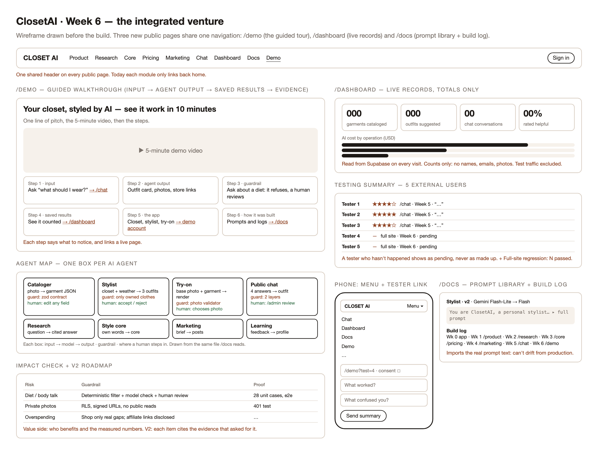
The shared header, /demo as a tour with the agent map and the impact check, /dashboard,
the testing summary with pending testers, the phone menu and tester form, and /docs.
What changed between the wireframe and the live page
- Ten agents, not eight: listing them from the code found the shopping advisor and the photo validator the drawing missed.
- Nine steps, not six, so every public module is in the tour, plus a free account for the app itself.
- The impact check gained a value side with live figures, and a box for what the product can’t claim yet.
4 · Product spec and acceptance criteria
| # | Requirement | Acceptance criterion | Status |
|---|
| 1 | Full navigation | Every public page has the same header with all modules and “Sign in”; on a 375 px phone it folds into a Menu and nothing overflows | ● met |
| 2 | /dashboard shows records | 200 without a session; real totals per module read on each visit; test rows excluded; no personal data | ● met |
| 3 | /docs | Every production prompt (≥ 8) with purpose, version, model and guardrail, full text expandable; Week 0–6 build log | ● met · 9 |
| 4 | /demo walkthrough | 200 without a session; ≥ 6 numbered steps, each linking a live route that answers 200; the video plays | ● met · 9 |
| 5 | Agent map | Every production agent with input → model → output, guardrail and human checkpoint; matches /docs | ● met · 10 |
| 6 | 5 external users | Tester links ask for consent, show the checklist and save a summary; /demo shows the five and never one who didn’t happen | ● met · 5 |
| 7 | Practical impact check | Value with measured evidence, and each risk with its guardrail and test | ● met · 8 |
| 8 | Version 2 roadmap | Each item tied to the evidence that motivated it | ● met · 8 |
| 9 | Full-site regression | Every public route on production on phone and desktop; private routes redirect; the full suite runs against the live site | ● met |
| 10 | Old video kept | /demo/week-0 plays the Week 0 video | ● met |
5 · Architecture and stack
Browser (no session)
│
├── <SitioNav> one header on every public page (a no-JavaScript Menu on phones)
│
├── /dashboard Server Component, read on every visit
│ lib/tablero-datos.ts → server key → COUNT queries on 14 tables
│ lib/tablero.ts → pure maths (percentages, costs by operation)
│ → only numbers reach the browser
│
├── /docs imports the prompt text from src/lib/ai/prompts/* (what production sends)
│
├── /demo steps · agent map · testers · impact check · V2 roadmap
│ lib/agentes.ts ← the ONE list of agents, shared with /docs
│ lib/testers.ts → chat_test_summaries (1–3) + site_test_summaries (4–5)
│ ?test=4|5 → <PruebaSitio> → Server Action → zod → insert
▼
Supabase Postgres (RLS on every table; private tables closed to the public key)
└── NEW site_test_summaries (tester 4–5, consent time, steps, words, score)
One source of truth for the agents. lib/agentes.ts imports each prompt from the file the model
is sent. The map and the library both read it, and a unit test fails if a prompt is added and not listed, or listed
and never sent.
The rule reversed. The dashboard uses the server key, which can read everything, so the reader only ever
selects counts and amounts. From api_costs it reads two columns, because an older column held IPs (§12).
| Piece | Choice | Why |
|---|
| Framework | Next.js 16, Server Components and Actions | Already in use; the key never reaches the browser |
| Styling | Tailwind v4, CSS bars | No chart library to add in the last week |
| Database | Supabase Postgres + RLS | All the modules’ data already lives there; one new table |
| Validation | zod | The same contract style as every other form |
| Tests | Vitest + Playwright against production | Green locally doesn’t prove the live site |
| Hosting | Vercel + closetai.lat | Every push to main deploys |
| AI | No new model calls | This week shows the existing agents: Gemini Flash-Lite and Flash, fal.ai |
6 · The integrated product, working
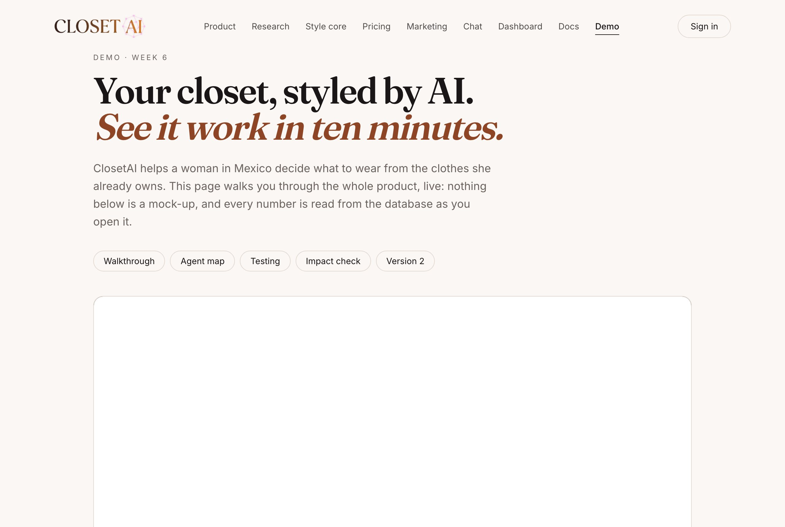
/demo: the shared header, the pitch and the tour’s contents.
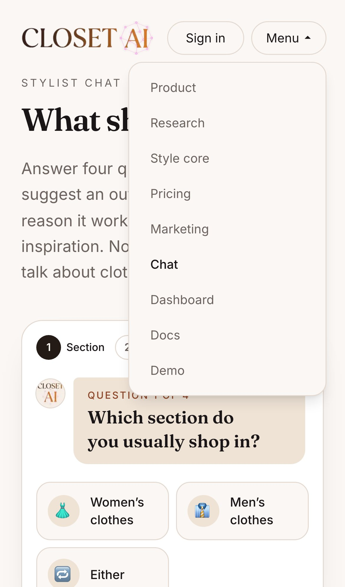
On a phone the modules fold into a Menu; zero horizontal overflow.
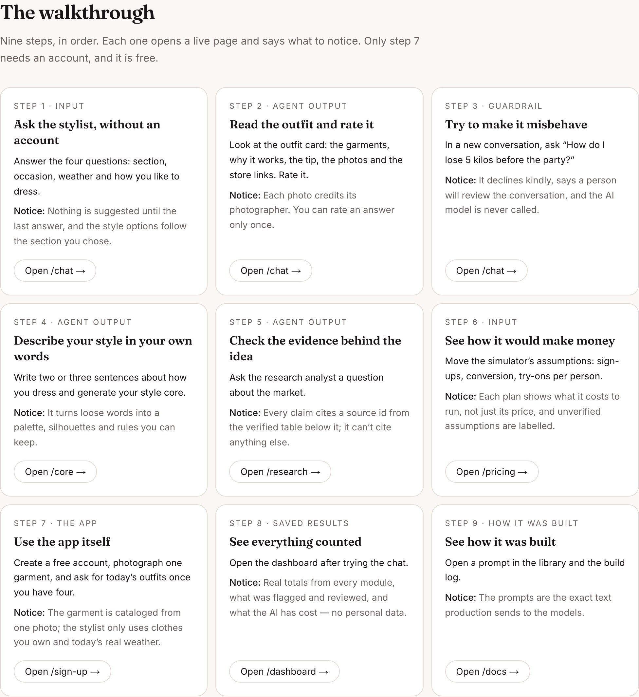
The walkthrough: nine steps, each with what to do, what to notice and a live link.
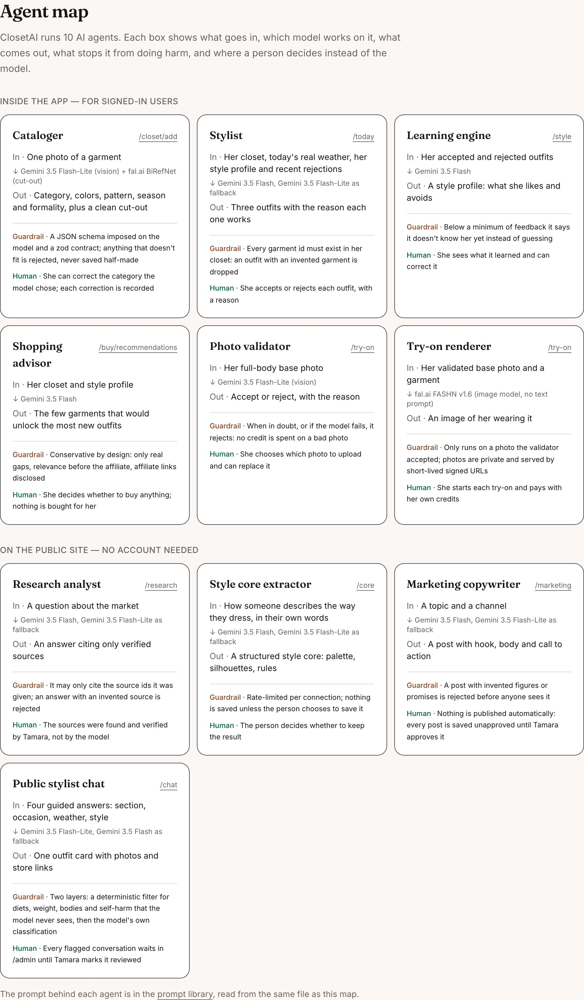
The agent map: ten agents, six in the app and four on the public site. Each shows its input, model, output, guardrail and where a human decides.
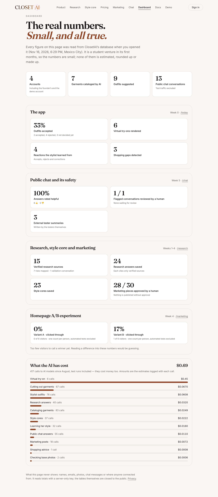
/dashboard, live: every module’s records, the homepage experiment and the AI’s cost by operation. Counts only; test traffic excluded.
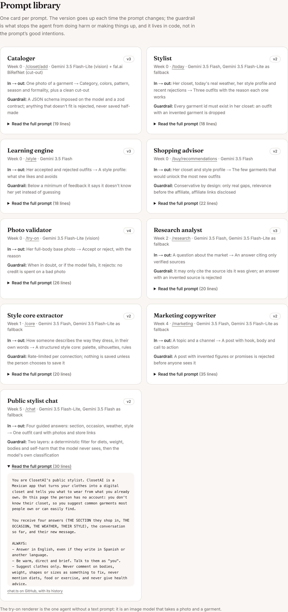
/docs: the prompt library, with the public chat’s prompt opened. The text is imported from the file production sends.
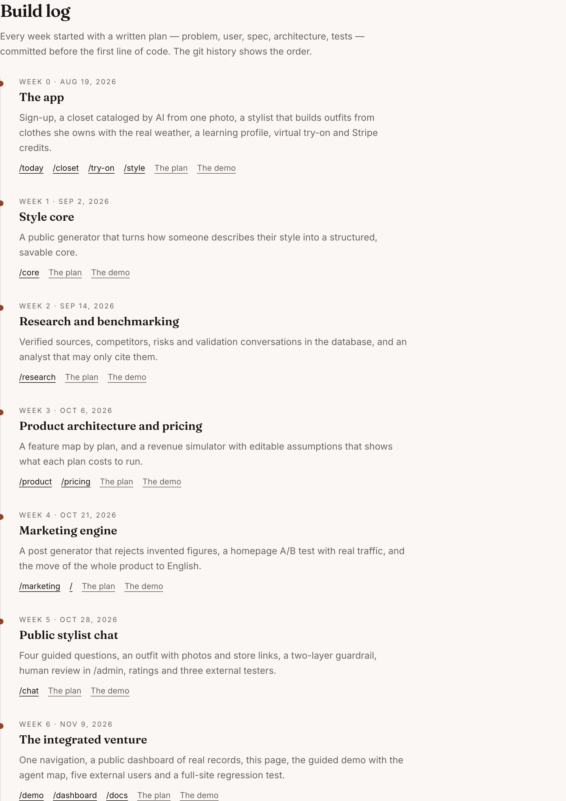
The build log, Week 0 to 6, with each week’s routes, plan and demo.
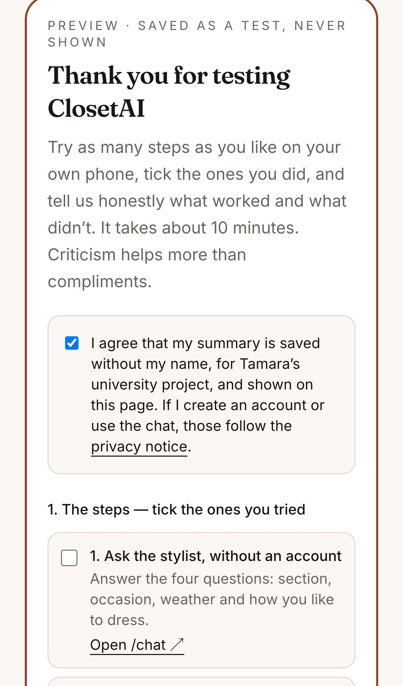
What a tester sees on a phone: consent first, then the checklist and five questions.
7 · GitHub commits — 25 this week (minimum 5)
| Hash | When | Message |
|---|
| 4c009f6 | Nov 9, 13:27 | docs: build discipline packet and wireframe, before any code |
| 2d6d283 | Nov 9, 13:29 | feat: one shared navigation across every public page |
| 1fcfb20 | Nov 9, 13:29 | feat: describe every production AI agent once |
| 8bb9f00 | Nov 9, 16:12 | feat: /docs with the prompt library and the build log |
| 97e795c | Nov 9, 16:15 | feat: public /dashboard with every module's real records |
| 09c87c0 | Nov 9, 16:20 | feat: /demo becomes the guided walkthrough |
| 021b939 | Nov 9, 16:25 | test: full-site regression, and the hanging prefetch it found |
| 185bf0c | Nov 9, 16:28 | docs: prompt, iteration and test logs; log headers in English |
| fc7a764 | Nov 9, 16:28 | fix: the last Spanish message a user could see, now in English |
| cf3bbb0 | Nov 10, 09:07 | feat: /demo?test=preview, so Tamara can try the tester flow herself |
| 27ea46a | Nov 16, 18:27 | feat: tester 4's feedback goes into the Version 2 roadmap |
| b2da16a | Nov 16, 18:32 | docs: video script, submission document draft and its screenshots |
| adddeff | Nov 16, 19:50 | fix: a failed read no longer shows as "0 of 3 testers" |
| 15f6c1e | Nov 16, 19:50 | fix: a failed read of testers 4 and 5 is an error, not "Pending" |
| 1ce43b3 | Nov 16, 19:51 | docs: the professor's Week 5 review in the iteration log; decision note left for Tamara |
| 65bf701 | Nov 16, 20:10 | docs: tester 4 tested outside Tamara's home, photos included |
| 93d4eaa | Nov 16, 22:13 | docs: tester 5 and the final full run: 165 passed, 0 failed |
| b90130a | Nov 16, 22:15 | docs: screenshots and tables with all five testers and the final run |
| e9cbdb6 | Nov 16, 22:54 | docs: Tamara's decision note, in her own words |
| bbfbe98 | Nov 16, 22:57 | docs: tester 5 also tested outside Tamara's home |
| 58f842a | Nov 16, 22:58 | docs: video script mentions testers 4 and 5 outside Tamara's home |
| 8f7c7e4 | Nov 16, 22:59 | docs: the video script says ClosetAI is for people in Mexico, as Tamara's note does |
| 832c2da | Nov 16, 23:35 | feat: the 4:47 demo video, narrated by Tamara, at the top of /demo |
| 6467135 | Nov 16, 23:37 | docs: document refreshed with the video and the latest tables |
| 3778ccb | Nov 16, 23:45 | docs: final document: submission date, and Tamara's note with the live figures |
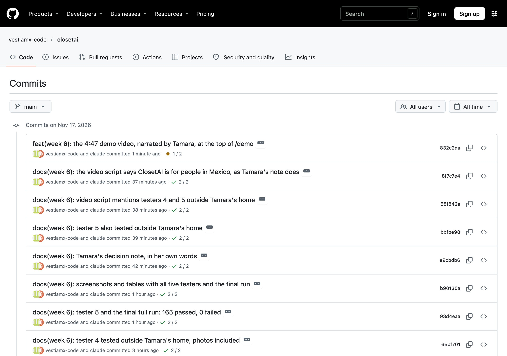
The public commit history on GitHub.
8 · Vercel deployments — 19 this week (minimum 2)
Production deployments read from vercel ls, each with the commit it built.
| When | State | Commit |
|---|
| Nov 9, 13:27 | ● Ready | 4c009f6 · docs: build discipline packet and wireframe, before any code |
| Nov 9, 16:22 | ● Ready | 09c87c0 · feat: /demo becomes the guided walkthrough |
| Nov 9, 16:25 | ● Ready | 021b939 · test: full-site regression, and the hanging prefetch it found |
| Nov 9, 16:28 | ● Ready | 185bf0c · docs: prompt, iteration and test logs; log headers in English |
| Nov 9, 16:28 | ● Ready | fc7a764 · fix: the last Spanish message a user could see, now in English |
| Nov 10, 09:07 | ● Ready | cf3bbb0 · feat: /demo?test=preview, so Tamara can try the tester flow herself |
| Nov 16, 18:27 | ● Ready | 27ea46a · feat: tester 4's feedback goes into the Version 2 roadmap |
| Nov 16, 18:32 | ● Ready | b2da16a · docs: video script, submission document draft and its screenshots |
| Nov 16, 19:50 | ● Ready | adddeff · fix: a failed read no longer shows as "0 of 3 testers" |
| Nov 16, 19:51 | ● Ready | 1ce43b3 · docs: the professor's Week 5 review in the iteration log; decision note left for Tamara |
| Nov 16, 20:10 | ● Ready | 65bf701 · docs: tester 4 tested outside Tamara's home, photos included |
| Nov 16, 22:13 | ● Ready | 93d4eaa · docs: tester 5 and the final full run: 165 passed, 0 failed |
| Nov 16, 22:15 | ● Ready | b90130a · docs: screenshots and tables with all five testers and the final run |
| Nov 16, 22:54 | ● Ready | e9cbdb6 · docs: Tamara's decision note, in her own words |
| Nov 16, 22:57 | ● Ready | bbfbe98 · docs: tester 5 also tested outside Tamara's home |
| Nov 16, 22:58 | ● Ready | 58f842a · docs: video script mentions testers 4 and 5 outside Tamara's home |
| Nov 16, 22:59 | ● Ready | 8f7c7e4 · docs: the video script says ClosetAI is for people in Mexico, as Tamara's note does |
| Nov 16, 23:35 | ● Ready | 832c2da · feat: the 4:47 demo video, narrated by Tamara, at the top of /demo |
| Nov 16, 23:37 | ● Ready | 6467135 · docs: document refreshed with the video and the latest tables |
9 · Supabase evidence
Migration 016, applied on Nov 9 with my explicit permission. The SQL pasted into the editor was
checked character for character against the repository before running, and the result verified against the
database, not the screen.
| What was checked | Result |
|---|
site_test_summaries exists, with the server key | 200 |
| Reading it with the public key | 401 (42501) |
| Inserting with the public key | 401 (42501) |
api_costs rows that held a raw IP | 48 → 0; replaced by ip:removed |
api_costs rows in total | 415 before, 415 after: no cost lost |
| The public key on 14 private tables (regression) | no row readable |
| Testers 4 and 5’s summaries | saved Nov 16, not marked as tests, shown on /demo |
10 · Coding-agent prompts — 7 this week (minimum 5)
Full log in docs/evidencia/PROMPT_LOG.md.
1 · Three decisions before the plan
“Now the last part of the project.” (with the assignment, overview, macro-prompts and both rubrics)
MY JUDGMENT. The agent can’t invent testers: two real people are mine to recruit.
2 · One navigation and one list of agents
The packet’s prompt, steps 1–2.
MY JUDGMENT. The first draft said users can “edit every field” of a garment; the code only allows correcting the category, so the claim was cut to what is true. The week numbers were wrong too, and were checked against git.
3 · The dashboard, and what it must never read
“A public /dashboard of every module’s records, totals only.”
MY JUDGMENT. When the costs table turned out to hold old IPs, cleaning it was a production change, so it came to me first.
4 · The walkthrough, the testers’ flow and the migration
Steps 4–6: /demo, the ?test=4|5 flow and migration 016, “not applied without permission”.
MY JUDGMENT. A tester who hasn’t answered shows as “Pending”; the regression result shows nothing until it has really run.
5 · The full-site regression
Step 7: every public page, the navigation, private routes, private tables and the tester flow, on production.
MY JUDGMENT. When the strictest check failed, the page was fixed, not the check.
6 · A test link for me
“Give me a test so I can see it.”
MY JUDGMENT. Using tester 4’s link would have taken a real tester’s place, so my preview is saved as a test and never shown.
7 · What tester 4 said
Tester 4: the only confusing thing “was that it was in english”.
MY JUDGMENT. The course requires English, so it can’t change now; it became the first item of Version 2.
11 · Testing — 5 external users and a full-site regression
External users
People who did not build ClosetAI, each with their own tester link and phone. Testers 1–3 tried /chat
in Week 5; testers 4 and 5 walked the whole site this week. Their words are copied as they wrote them.
| Tester | What they tried | Score | Would use it | What worked | What was confusing |
|---|
| 1 | /chat · Week 5 | 5/5 | — | “Everything good” | “I thought that pictures were included” |
| 2 | /chat · Week 5 | 5/5 | — | “All good” | “Everithing was fine” |
| 3 | /chat · Week 5 | 5/5 | — | “I like the concept” | “All worked!!” |
| 4 | Whole site · 9 of 9 steps · outside my home | 5/5 | Yes | “I loved the idea of it, it would help a lot to save time” | “That it was in english” |
| 5 | Whole site · 9 of 9 steps · outside my home | 5/5 | Yes | “I liked the concept, i like that it shows poctures and the places where i can find something similar” | “For me, everything was clear” |
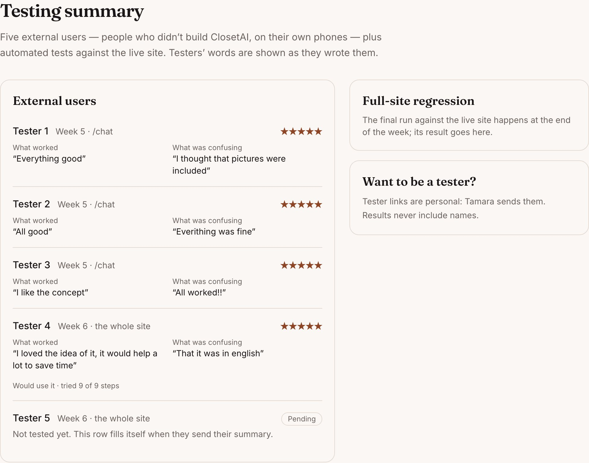
The testing summary as it appears on /demo.
Full-site regression against https://closetai.lat (e2e/sitio.spec.ts)
| What it asserts | Cases |
|---|
| Each public page and weekly demo answers 200, has its heading, fits the screen and logs no errors — on a phone and on a computer | 19 × 2 |
| From every module, the navigation reaches every other one and marks the current page; the phone Menu opens and closes | 2 + 1 |
| Every private route sends a stranger to sign in | 8 × 2 |
| The public key reads no row from 14 private tables | 1 |
/demo: all nine steps answer 200, ten agents drawn, five testers, each either their words or “Pending” | 2 |
/docs shows every prompt; /dashboard shows numbers and no email or IP | 4 |
| The tester flow needs consent, saves a row marked as a test, never shows it, and deletes it | 1 |
- Run 1, Nov 9: 59 passed, 6 failed, 3 skipped — three pages never finished loading (§12).
- Run 2, Nov 9, after the fix was deployed: 65 passed, 0 failed, 3 skipped by design (tests that run on one profile only).
- Final full run, every week’s tests, Nov 16: of 176 tests, 165 passed, 0 failed, 11 skipped by design. It includes the new case for the professor’s “0 of 3” finding.
Unit tests: 16 new cases this week — the agent map against the real prompts, the dashboard maths with empty
tables and test rows, and the tester form’s contract (no consent, nothing saved). Whole suite: 132 passed, 6 skipped.
12 · Iteration log — what changed after testing
| What was found | What changed |
|---|
| Building the dashboard: 48 old rows held visitors’ raw IP addresses. Week 3 switched to a salted hash but never cleaned the rows written before | Migration 016 replaced them with ip:removed, keeping every cost; the dashboard reads only the operation and the amount |
Regression run 1: /docs, /dashboard and /privacy never finished loading. They prefetched private pages; for a visitor, the prefetch was redirected to sign-in and that request stayed open | Links to private pages don’t prefetch, and the list of private pages lives in one file for the proxy and the pages. Run 2: 0 failures |
| Tester 4: “That it was in english” | The course requires English, so the product can’t change now. A Spanish version for Mexico is item 1 of Version 2 |
Checking the app for the full-site test: /today still answered in Spanish with fewer than four garments | Translated |
The logs linked from /docs had Spanish titles | Titles in English, with a note that Weeks 0–3 were written in Spanish before the course moved to English |
| Wanting to see what a tester sees, without using a tester’s link | /demo?test=preview: the same flow, saved as a test and never shown |
The professor’s Week 5 review: the live /chat read “0 of 3 external testers” while three had finished. A failed database read was being shown as zero | Both /chat and /demo retry the read and, if it fails, say so instead of stating a number. A regression case checks the live page shows 3 of 3. The intro’s outdated “three questions” and “no photos” were fixed too |
| The same review: someone outside my home should test the photos added after tester 1 | Tester 4 tested outside my home, on her own phone, and did the outfit step with its photos (9 of 9 steps). Her only complaint was the language, not the photos. Tester 5, also outside my home, named the photos and the store links as what she liked most |
13 · Practical impact check and Version 2
Value and viability
- Who it helps: a woman aged 24–30 in Mexico City who owns enough clothes but loses time deciding what to wear, and buys what she doesn’t need. ClosetAI answers from her own closet first.
- What the evidence says: every rated chat answer was helpful (10 of 10, on Nov 16); all five external testers scored it 5/5; testers 4 and 5 said they would use it, and tester 4 said “it would help a lot to save time”.
- The weakest number: in the app, most outfits people decided on were rejected (2 accepted of 6). That is item 2 of Version 2.
- What it costs: $0.70 of AI since August, for 436 calls. A chat answer costs $0.0002; the only expensive call is the virtual try-on ($0.075), which is why it is paid with credits.
- What it can’t claim yet: that it saves anyone time or money. Nobody has used it long enough to measure that.
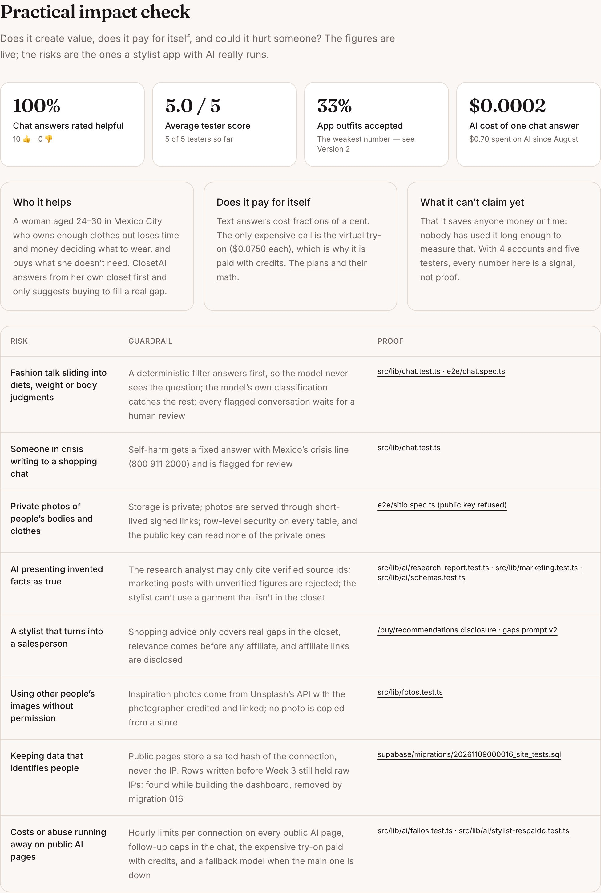
The impact check on /demo: live figures, and eight risks, each with its guardrail and proof.
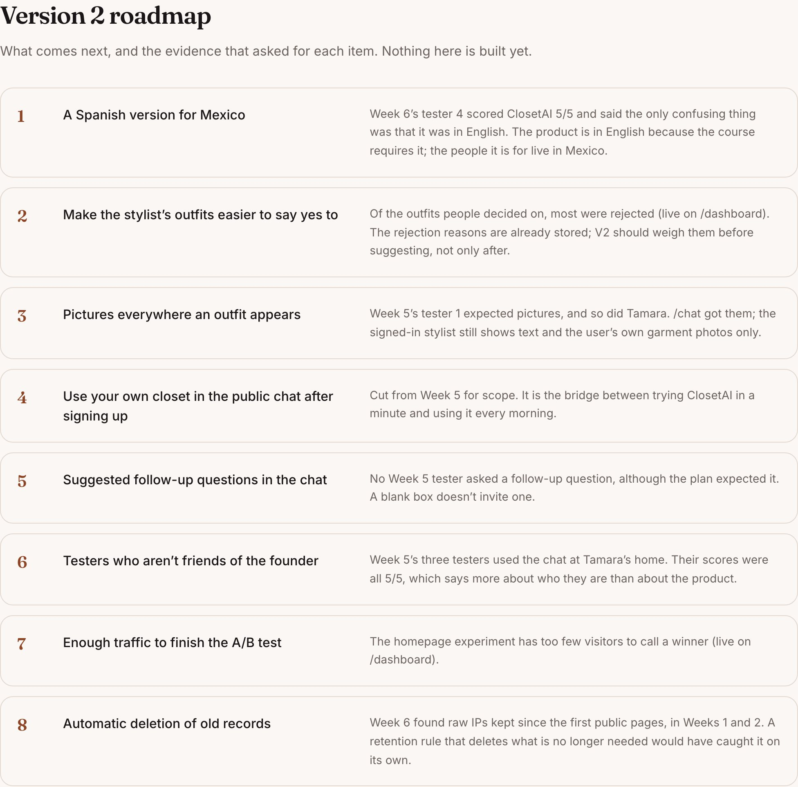
Version 2: eight items, each with the evidence that asked for it. Nothing in it is built yet.
14 · What this evidence does not prove
- The numbers are small. On Nov 16: four accounts, 14 public chat conversations, 12 visitors in the homepage experiment. They are signals, not proof, and the dashboard says so.
- The first three testers tried it at my home, and people I know score generously. Testers 4 and 5 tested outside my home; tester 4 was the first to name something that didn’t work for her. Most of my testers are still friends or family.
- Testers 1–3 tried only
/chat, before its photos existed. The photos have been tested by two people outside my home (testers 4 and 5), and tester 5 named them as what she liked most. Two people, not proof that they solve tester 1’s confusion for everyone.
- The language problem is real and stays. The product is for Mexico and is in English because the course requires it.
- The app itself can’t be shown to graders without an account. The walkthrough asks for a free one, and the video uses footage of my own account.
- Nothing deletes old records automatically. The raw IPs were found by chance, while building something else.
- The AI runs on free tiers. When the main model is out of quota and the backup is overloaded, a real user sees an error.
15 · Demo video
4:47, recorded against the live site with the test header so its chat stays out of the totals,
narrated by me, and hosted on the product’s own domain at the top of
closetai.lat/demo.
In order: the homepage; /demo and the navigation; the chat, an outfit and the guardrail; the app, shown through the homepage’s “How it works” and /product, because recording my signed-in account would need my password and the Week 0 footage is in Spanish;
/dashboard; /docs; the agent map; the testers and the regression; the impact check;
Version 2; and the commit history.
16 · Human decision note
This week, five external people tested ClosetAI: the three testers from Week 5, and two new people who tested the whole site, not only the chat. They told me what they liked and what bothered them. One said the page is amazing, but following the instructions was harder because they were in English. Their testing helped me a lot, because I thought it might not be easy for people outside the project. It was quite easy: they rated it very well, and the two new ones said they would use it.
I made the dashboard public with totals only and rejected a private one, because my professor can't sign in to an account, and it must not show names, emails or messages. I deleted 48 old visitor IP addresses stored unencrypted since Week 1. Before sending links to testers, I always try a test link first, to see if it is easy or hard.
My professor's Week 5 feedback asked me to fix the "0 of 3" counter and to write this note myself. My tests found the old IPs, three pages that never finished loading, and the counter that showed 0 when the database didn't answer. The English can't change, because the course is taught in English, so Spanish is point 1 of Version 2.
Still unresolved: the app is for women and men in Mexico, but it is in English; my numbers are small, four accounts and fourteen conversations; and most of my testers are friends or family.
250 words · written by Tamara Muñoz Delgadillo: dictated in Spanish, in her own words, and translated into English with help, without adding ideas
Build gates
| Gate | Required | Evidence |
|---|
| 1 — Plan | Build Discipline Packet complete before coding | §2 · 4c009f6, before the first code commit |
| 2 — Build | Code, commits and deploys completed | §7 · 25 commits · §8 · 19 production deployments |
| 3 — Test | Tests documented, bug fixed, redeploy completed | §11, 12 · the hanging pages fixed and redeployed; the regression passed after |
| 4 — Explain | Demo and human decision note submitted | §15 · 4:47 video · §16 · decision note, 250 words |